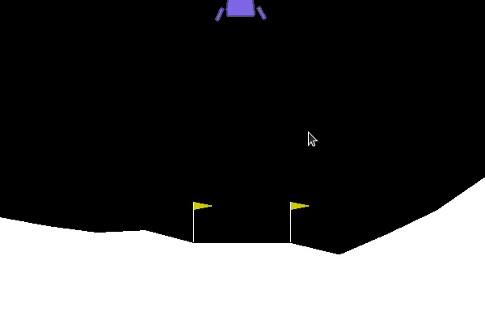

Projects
-
Currently you can have a look at some of my other projects
in my Github repositories.
Robotic Arm with Computer Vision for Sorting Objects Based on Their Shapes
Lunar Lander
Half Cheetah
- Document Question Answering Query answering models are helpful for finding answers in documents because they can extract the answer to a question from a text. Some approaches for answering questions can produce responses devoid of context!
- Fine-tuning WHISPER on Bengali Language Whisper is a multi-language Automatic Speech Recognition model. It is the latest speech to text model currently available on the engineer's community. However, the performance of the model on Bengali Language is very mediocre. Since this model has shown tremendous excellence in high resource languages: such as - english, our assumption is that, a fine-tuning operation on a large Bengali Speech dataset might provide a strong performance in Bengali as well. This notebook can be modified for finetuning whisper on any specific dataset.
Bangla ESPNET - Text to Speech (TTS)
Bangla ESPNET - Automatic Speech Recognition (ASR)
GAN - Face Generate
Flappy Bird - RL Agent
End to end Encryption with Diffie–Hellman Key Exchange(DFKE) Technique
Track Me - Vehicle Tracking System
Privacy preserving GPS with open street map interface
Electronic Speed Controller for BLDC Motor
MSP430 - Drivers
Movie Night
AC Equipment Power Controller
4 Bit SAP Computer


This project was done as part of a competition organized by BUET Robotic society. Our team was champion in the competition. We utilized Image Processing Techniques to determine the shape of objects on a running conveyor belt while a robotic arm kept sorting objects. Later, the project was also showcased on "Digital Bangladesh 2017". Details of the project can be found here.

This project was focused on training a LunarLander RL agent with deep Q learning. The policy was designed with 3 fully connected layers built on PyTorch. The final average score on 100 episodes was 106. Source Code for this project can be found HERE

This project was focused on training a HalfCheetah RL agent with deep Q learning. MUJOCO physics simulation platform was used as the environment. The agent was based on Proximal Policy Optimisation algorithm.
We are currently developing an end to end document question answering software to batch process the purchase invoices of industry and provide summary of overall finance status of a company.


ESPNET is an end to end speech processing toolkit and it was developed by Carnegie Mellon University. This toolkit was primarily trained for English and Japanese language. In this project, we trained ESPNET LJSpeech Recipee for TTS on Google SLR Bangla dataset (360 hrs of Raw Audio) and built an end to end bangla TTS inference system. This projet was done as part of conversational AI design for banking platform at Celloscope. Due to company's privacy policy, the inference API and trained model cannot be released to the public domain. However, we created this notebook as a demonstration of the training pipeline.
Mozilla released common voice dataset with 400 hours of Bangla Dataset. We trained ESPNET ASR for Bangla Language with the combination of both Google SLR and mozilla common voice dataset (Total 760 Hrs). This projet was done as part of conversational AI design for banking platform at Celloscope. Due to company's privacy policy, the inference API and trained model cannot be released to the public domain. However, we created this notebook as a demonstration of the training pipeline.

This project is a part of my learning GAN for the first time. It was trained on 200 images of my own face. Extremely small dataset, right? ;3
Implemented this on google colab. This picture depicts the output of the training after 10000 epochs. Performance is not decent. But the shape of the face can be recognized. :3 implementation can be found here.
.gif)
I did this project as part of my personal interest in the field of Reinforcement Learning. This autonomous agent was powered by Deep Q-Learning. It was trained on my CPU and it took pretty long time to train. :3 . Implementation can be found here.
This is a software designed to securely share audio, text and images between 2 computers. The baseline algorithm powering the security of data transmission is DHKE (Diffie–Hellman Key Exchange). The Diffie–Hellman (DH) Algorithm is a key-exchange protocol that enables two parties communicating over public channel to establish a mutual secret without it being transmitted over the Internet. DH enables the two to use a public key to encrypt and decrypt their conversation or data using symmetric cryptography. This tool can be downloaded from here.


This project is the design of a vehicle tracking system. This hardware is connected to several sensors: voltage measurement, current measurement, accelerometer, GPS and bluetooth. It is connected to the internet through GSM technology. It directly pushes data to google firebase through MQTT communication.
Users can integrate this device with their vehicles to monitor and track the movement, voltage level etc of their vehicles. The driver APK file can be found here: here.
The schematic files can be found here: here.
Sample App Interface:


An extension of this project is to monitor the power consumption of vehicles. This device can be interfaced with our power monitoring application to access a realtime database to monitor the power consumption of vehicles.

This project was a part of micro-processor lab course during 4th year of my undergraduate program at BUET. The system efficiently incorporated IoT and web frameworks to establish an interesting tracking system. For more information, click here
This is an electronic speed controller for brushless DC motors. The Controller was designed with 3 MOSFET half bridges. Gates of the mosfets were triggered by TLP250 Optocoupler. Each MOSFET had its own optocoupler acting as a MOSFET driver. The high side of the MOSFETs were equipped with bootstrapping mechanism to provide reliable performance. The synchronization of the gates were controlled by an Arduino. Design and codes can be found here.

This Repository contains drivers for MSP430 micro-controller family designed in C/C++.


This Repository contains the built files and source codes for a movie synching application. I designed this application as a fun project to watch movies with friends during COVID 19 lockdown. Most of the online movie syncing platforms require stable internet connectivity and if one person has unstable internet connection, others get disrupted. I designed this application to sync offline movies to function even during extreme slow internet connection.
This app was designed in python for both windows and linux platforms. Have fun using it :3

This project is an AC equipment power controller circuit. Designs of the hardware can be found here.
This hardware modulates the triggering time of triac bridges to control the intensity of Alternating Current Supported Devices. This can be primarily used with generic AC equipments such as light bulbs. It cannot control the power of LED bulbs.
This repository is the design of a 4 Bit SAP computer designed in VERILOG HDL. Total 16 instructions were implemented.
4 Bit Computer in Verilog [SAP]
- Instruction Set:
- Add A, B
- Sub A, B
- XCHG B, A
- mov B, [address]
- out B
- jnz Address
- RCR A
- mov B, BYTE
- jmp Address
- push A
- pop A
- CALL Addr
- RET
- xor A, [Addr]
- test B, BYTE
- HLT
This computer is designed in such a fashion so that all the instructions are executed sequentially.
The instruction pointer for the next instruction is passed at the end of each instruction.